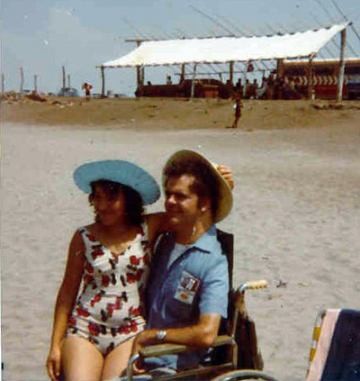
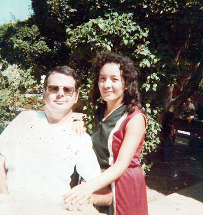

As I turned the calendar to the first page of a new year, little could I have foreseen all the ups and downs that lay ahead. A definite roller-coaster chain of events. The difference between this year and others was that now I was contemplating having a helpmate by my side. And not only that, but a whole crew: two daughters, a son, and all the rest of the extended family. So I blithely felt confident that whatever troubles might befall me down the camino, at least I wouldn't face them so alone as in the past. As a friend of mine once told me: "you only have to choose a direction and GO. Life's adventures will unquestionably follow you, and you'll have many stories to tell."
The first event of the year - a big, family trip to the beach on January 1 - got off on a bitter-sweet start. As we all loaded up in my Dodge van, I noticed that someone had broken in during the night, stealing my radio! Lucky for us, that was all that was taken, no other damage was done. For me, the loss was mostly sentimental, not monetary. That radio had been given to me some three years before by a very close friend, named Zoltan Ujhelyi. An expert in electronics, Zoltan had installed it himself just as I had begun another great departure in my life in Illinois. (But more about that later.)
The beach trip was quite successful and enjoyed by all. Definitely a great way to kick off a new year. For me, it was a rare type of experience. My life in the plains of Kansas had not provided any chances to dip my toes in the largest ocean of the world. Prior to getting polio in 1955, I had spent a month in California, where I did go to the beach on occasion. But there is a big difference in being able to jump around in the water, fighting the waves as they roll in to the shore, compared with sitting in a wheelchair merely watching things like that performed by others. The compensation, though, lies in watching ones you love enjoy it. We, of course, returned in the coming months. As I would learn after living in El Salvador, going to the beach is really "the thing to do".
 Gloria and Terry, at the beach, in Puerto Madero The upward activities of January-February of course included the regular sort, like beginning English classes with the institute's customers, taking the family out to eat and enjoy life in whatever way we could afford. One unique happening involved the world of fine arts, specifically "ballet dancing". Andrea, the daughter of the owners of the institute had been a very talented ballet dancer in her youth. With her husband and young son, she lived in an apartment in the second floor of the institute's premises. So she decided to open her own little ballet academy there. Sonia wanted to learn ballet, so a deal was arranged. In exchange for baby-sitting with Carlitos, Andrea's child, Sonia could receive free instruction. Later Areli joined in as well. Of course, this meant new expenses. Ballet shoes and leotards for starters. Then when the academy held their big end-of-year presentation in June, they needed the fancy tutus. Two tutus, naturally. (Now, where is that Master Card when you need it?) Observe that I was being called upon to do the fatherly provider role well before any marriage had taken place. But the results were certainly worth every centavo of it.
Even this activity was not without its down side. Two or three weeks prior to that public presentation, an incident occurred between me and Andrea threatened to deny me the pleasure of watching the girls' participation. Somewhere in the institute's hallways, I had a slight "traffic accident" with Andrea's little boy. I wasn't aware he was behind me when I put my chair in reverse, thus colliding with the little tyke. Andrea was naturally upset with me, and told me that I couldn't go to see the performance. It is recorded in my diary that "Sonia rallied to my defense." Gloria, too, stepped up to the plate, saying that if Terry couldn't go, the two girls wouldn't dance either. Suffice it to say, I was permitted to see the show. And what a nice show it was, too. Andrea knew a lot about ballet.
Another up-down situation was of a more mundane, mechanical nature. The care and feeding of an electric wheelchair is not an easy thing to do at anytime, much less in a foreign country, when one is far away from stores that carry such equipment, with experienced technicians. I would venture to say that I was probably the only individual in the whole city of Tapachula with my type of equipment, and perhaps in the whole state of Chiapas. Hence, when a part broke, the repair was always a tension-filled affair for me. The same had often occurred to me during my nine years in Illinois, but it became magnified many times over in this environment. The fact that I walked a lot in rough streets that were never intended to be traveled by such a motorized vehicle may have had something to do with my breakdowns and subsequent frustrations. But I had places to go and things to do. I also had the good fortune of being able to call on friends and students to expedite matters. So I survived these little crises, one at a time.
My challenges with mechanical items were not confined to just my wheelchair, they also extended to my Dodge van. Ever since I bought it new in '75, I had troubles of one sort or another with it. Usually they concerned the motor's electrical system, but near the end of my residence in Mexico, there were problems with the drive gears, threatening the safety of our impending departure after the wedding. One evening after I had given a private English class at a student's home, the gear for reverse quit working. Imagine that! I could only drive forward. Well, I guess it could have been worse if it had been the other way around, no?
As anyone knows who has done any travel to foreign countries, there is always that little matter of tourist visas, the permission granted to someone for spending money while touring around, seeing the sights, and the like. However, it becomes more complicated if the individual has no money, nor intention of just "looking around", but is more concerned about more basic matters, like mere survival, after fleeing troubles left behind. That pretty well sums up the case for Gloria and her family. They were, in effect, "documented migrants". Mention has been made about Gloria and the rest renewing their visas in November of the previous year. What was not explained in that brief account was that Sonia had entered Mexico without any papers. Initially, Gloria entered Mexico with Areli's photograph included in her passport. This would imply that all movements of one had to be done with the other, in order for things to be legal and proper. Hence, the night that she crossed with Sonia beside her, there must have been a guardian angel busy at work, preventing the border agent from noticing the difference. Talk about bravery, Gloria certainly was ready to take a big gamble for the future happiness of her family and love for me.
In February a nearly equal crisis took place. We had planned to hold a Bahá'í event in a small village some distance from Tapachula, called Comalapa. Gloria and the others were going to cross the border for renewing things. Then meet us in Comalapa. When they arrived, there was nothing but bad news to report. Not only was permission denied, but they were told to move on southward. In reality, they crossed back into Mexican territory, up-river. So, now they were indeed "wetbacks". What to do now? Someone in Comalapa suggested that Mexican citizenship papers could be arranged for Gloria, at least. It seemed the only way to keep her by my side and to keep the family together. The fact that it was never carried out proved to be a blessing. Upon our return to the city, Doña Anna and I talked with an individual who advised us properly. Then we wrote up a letter of presentation. Now when Gloria returned once more, she was granted a 6-month visa! That would turn out to be sufficiently long enough to cover her remaining time in the area. When next she crossed the border, she was Mrs. Trotter and returning to her native land, El Salvador.
 Terry and Gloria, in a little park, in Comalapa I, on the other hand, had come to Tapachula to be a language teacher in a school. Still I needed to obtain visa permission to remain present and carry out my duties. Being unfamiliar with such rules and regulations, I tried various times to get help from some of my adult students, or from other people who knew people in the immigration offices, or who had a relative there. Usually I received good advice, but not always. My final time occurred in June. After consulting with the cousin of a friend, which brought negative results, I talked to a private student. This lady said her cousin also worked in the aduana [customs]; surely that would be the way to go. This person did set me on the right track. Her husband even accompanied me, to help explain matters properly. My success only cost me 500 mexican pesos. The good news was that I was "legal" again. To top the day off nicely, when I returned to the institute, I was informed that someone had requested to have private English classes with me. So money goes out, and money comes in. The best thing however was in my mailbox - a letter from my father saying that he was going to fly down to attend my wedding! Now isn't that a good way to end a day on an up-beat note?
| Comments? Send e-mail. |
Back to top |
Go back to Contents |
order viagra usa cheap generic viagra usa viagra online non prescription online generic viagra order viagra canada online viagra without perscription generic viagra online viagra without perscription canada generic viagra usa order generic viagra non prescription viagra canada viagra online non prescription viagra online non prescription viagra non prescription order generic viagra canada viagra online non prescription non prescription viagra online viagra online non prescription order generic viagra order generic viagra canada order viagra usa order viagra canada order generic viagra canada viagra without perscription canada